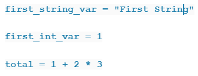
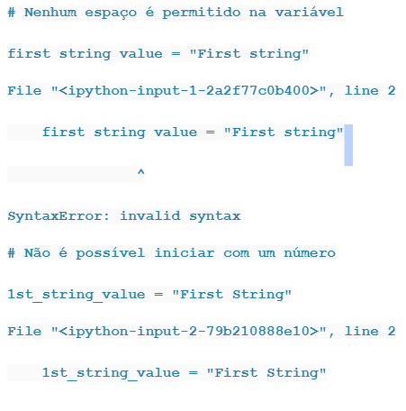
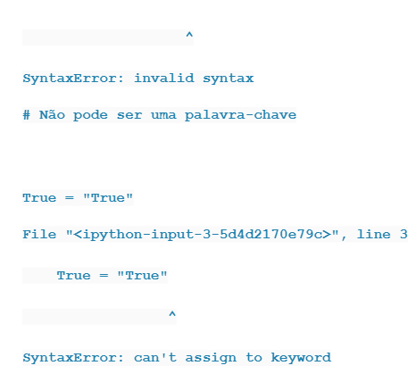
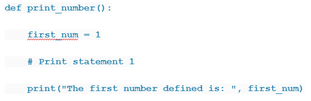
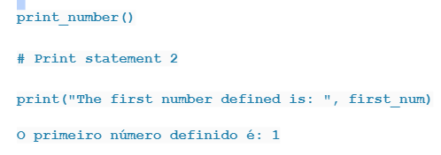
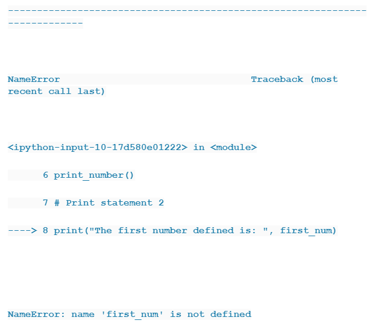

Variável
Uma variável é um rótulo ou um nome dado a um determinado local na memória. Esse local contém o valor que você deseja que seu programa lembre, para uso posterior. O que é ótimo no Python é que você não precisa declarar explicitamente qual é o tipo de variável que deseja definir – ela pode ser de qualquer tipo (string, número inteiro, float etc.).
Para criar uma nova variável no Python, basta usar o operador de atribuição ( = um único sinal de igual) e atribuir o valor desejado a ela.

Atribuir um valor inicial a uma variável é chamado inicializar a variável. Você acabou de inicializar a variável:
first_string_var com um valor de sequência de Primeira sequência e variável first_int_var com um valor inteiro ou numérico de 1.
A parte à esquerda do operador de atribuição é o nome da variável e o lado direito é o seu valor. O lado direito também pode ser uma operação aritmética – nesse caso, ela será avaliada antes da atribuição.
Python tem algumas regras que você deve seguir ao criar uma variável …
-Ele pode conter apenas letras (maiúsculas ou minúsculas), números ou o caractere sublinhado _
-Pode não começar com um número;
-Pode não ser uma palavra-chave (você aprenderá sobre elas mais tarde).
Se você não seguir essas regras, receberá um erro. Experimente você mesmo:


Escopo Variável
Agora que você sabe como inicializar uma variável. Vamos falar sobre o escopo dessas variáveis. Nem todas as variáveis podem ser acessadas de qualquer lugar do programa. A parte de um programa em que uma variável está acessível é chamada de escopo. Existem quatro tipos principais de Escopo de variáveis em Python e é a base para a regra LEGB.
LEGB significa Local -> Enclosing -> Global -> Built-in.
Vamos aprender mais sobre escopos …
Escopo local
Sempre que você define uma variável dentro de uma função, seu escopo fica APENAS dentro da função. É acessível a partir do ponto em que é definida até o final da função e existe enquanto a função estiver em execução ( Origem ). O que significa que seu valor não pode ser alterado ou mesmo acessado de fora da função. Vamos dar um exemplo simples:



Conseguimos imprimir a variável first_num chamando a função print_number()(# Print statement 1). Mas, ao tentar acessar e imprimir a mesma variável de fora da função (# Print statement 2), ele levantou a NameError. Isso ocorre porque first_num é “local” para a função – portanto, não pode ser acessado de fora do corpo da função.